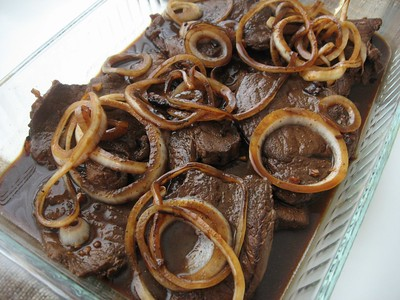

Bistek

Description
Bistek is a beef or occasionally pork-based dish marinated in soy sauce and calamansi and later fried with
onions.
It's a delectable dish that tastes as good as it is easy to make.
Ingredients
- 200g Pork Kasim
- Juice of two calamansi
- 1/2 cup Soy Sauce
- 1 large white onions
Steps
- Slice meat into bite-sized pieces
- Marinate meat in Soy Sauce and calamansi mixture for 3-4 hours
- When ready to cook, chop onions into rings
- Saute onions in a wok until soft, then set aside
- Fry meat along with remaining marinade in the same wok.
- As the meat cooks, set aside the marinade and meat juices in a heat-resistant bowl.
- When meat is nearly cooked and there's no more sauce to set aside, add an additional amount of soy sauce, then
season to taste
- Once meat tastes cooked, add back in the onions and mix thoroughly
- Serve on top of hot white rice.